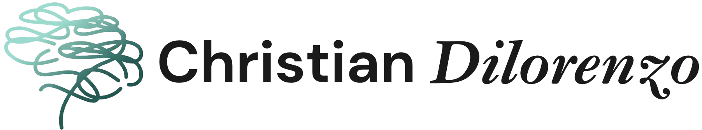

secondo l'approccio della dott.ssa Gabriella Tupini
Ti capita mai di svegliarti con una strana sensazione addosso, come se avessi vissuto un'altra vita durante la notte, ma senza riuscire a capirne il significato?
I sogni sono messaggeri silenziosi che puntano verso un'unica direzione: la nostra verità. Esistono per aiutarci a capire chi siamo, cosa desideriamo davvero e come percepiamo il mondo, rivelandoci al contempo i segni che il mondo ha lasciato su di noi.
Sono lo strumento privilegiato che l'inconscio utilizza per parlarci. Attraverso di essi, l'introspezione diventa un ponte naturale verso l'autorealizzazione. I sogni non si limitano a mostrarci inclinazioni e desideri; ci spingono a guardare con coraggio al passato per sciogliere i blocchi, gli schemi ripetitivi e le ansie che appesantiscono il nostro presente.
Un vero cammino interiore inizia qui: nel momento in cui decidiamo di mettere in dubbio tutto ciò che abbiamo accettato senza mai interrogarci.
Decodificare i simboli onirici significa riscoprire la propria anima — imparare ciò che ama e ciò che rifiuta — per tornare finalmente a stare bene con se stessi. Solo conoscendo profondamente noi stessi possiamo imparare a comprendere davvero gli altri e la realtà che ci circonda.
È un percorso vivo: durante il viaggio troverai sempre una parte di te che spinge per avanzare e un'altra che, per paura, proverà a trattenerti.
Forse ti senti frustrato perché, nonostante i tuoi sforzi, al risveglio trovi solo il vuoto. Se provi spesso questa sensazione di “porta chiusa”, sappi che non è una mancanza di capacità, ma spesso un meccanismo di protezione che il tuo inconscio ha attivato per evitarti un dolore che non sei ancora pronto a gestire.
Molti credono di non sognare, ma la scienza e la psicologia concordano: tutti sogniamo. In media, ogni notte produciamo almeno cinque scenari onirici, eppure per molti il risveglio coincide con il vuoto.
Spesso questo accade perché cerchiamo scorciatoie per il riposo: l'uso di alcol, sonniferi o cannabis, sebbene aiuti ad addormentarsi velocemente, altera le fasi profonde del sonno e agisce come una gomma, cancellando il ricordo dei sogni.
Chi non ricorda mai i propri sogni, o lo fa raramente, spesso nasconde una ferita dolorosa antica. L'inconscio, per proteggerci, “chiude la porta”.
Ma c'è una ragione più profonda, legata alla nostra protezione interiore. Se abbiamo sepolto emozioni troppo dolorose, la mente teme che il sogno possa riportarle a galla, costringendoci a rivivere ciò che non siamo ancora pronti a guardare.
Se ti capita di svegliarti col cuore in gola o in preda all'angoscia a causa di un incubo ricorrente, non scacciarlo subito. Quell'urlo che senti è una parte di te che ha bisogno di essere ascoltata, qualcosa che hai dovuto “mettere a tacere” tempo fa solo per poter sopravvivere.
L'incubo è un messaggio urgente che non può più essere ignorato: è un urlo della nostra anima. Spesso, queste visioni angoscianti rappresentano parti di noi che abbiamo “segregato” o soffocato per troppo tempo e che ora chiedono, con forza, di essere reintegrate.
L'incubo segna l'emergere di emozioni insostenibili legate a ferite profonde del passato. Dolori e ferite che abbiamo scelto di dimenticare per pura strategia di sopravvivenza.
La mente cancella il ricordo per permetterci di andare avanti. Ma nel quotidiano ne restano gli effetti: ansie, blocchi e paure inspiegabili.
Ti sei mai interrogato sul significato di un sogno strano, o che ti ha lasciato addosso un senso di confusione per tutta la giornata? Spesso etichettiamo queste immagini come “sciocchezze”, ma la verità è che capire il linguaggio dei sogni è fondamentale per la nostra evoluzione.
È importante capire i sogni visto che passiamo un terzo della nostra vita a dormire e sognare. I sogni ci aiutano a capire noi stessi e si interpretano con il cuore.
Interpretare i sogni significa dialogare con l'anima. Farlo ci permette di:
Ti sei mai chiesto: “Come faccio a sapere se l'interpretazione del sogno è corretta?”
Questa è una delle domande più frequenti. Spesso cerchiamo la risposta in un libro o nella logica, ma la verità è che il significato di un sogno non va “capito” con la testa, va sentito.
Per sapere se un'interpretazione è giusta, devi ascoltare il tuo corpo e il tuo cuore: ti risuona? Ti tocca nel profondo? Se, leggendo o pensando a un significato, senti una sorta di “click” interiore, un'emozione che si muove o un senso di chiarezza improvvisa, allora sei sulla strada giusta.
Dobbiamo imparare ad affidarci all'istinto per sentire. Se un'interpretazione ti lascia indifferente, probabilmente è solo un esercizio mentale. Se invece ti scuote, ti commuove o ti dà un senso di pace — anche se la verità emersa è scomoda — allora quella è la voce della tua anima che ti sta confermando: “Sì, è proprio così”.
I sogni non si interpretano con la mente, ma con il cuore. Per comprenderli, dobbiamo prima abbattere le barriere dei nostri schemi mentali. Senza la chiave di lettura dei sogni, rischiamo di vivere in superficie. Il sogno, invece, ha il potere di svelare i nostri automatismi: man mano che questi schemi cadono, il linguaggio onirico diventa più chiaro.
Molto spesso i sogni, per far capire delle verità e sfuggire alla censura della mente condizionata, usano figure di copertura. In generale, i nostri genitori nei sogni sono sempre loro. Mentre tutte le figure che sembrano nostri coetanei rappresentano parti di noi.
Utilizza un quaderno, un diario o anche il tuo cellulare. Ecco cosa annotare:
Nota: Il significato dipende sempre dal contesto del sognatore.
Ogni simbolo onirico porta con sé un universo di significati che variano a seconda della storia personale, delle emozioni e del momento di vita di chi sogna.
| Acqua | Rappresenta le nostre emozioni. Se l'acqua è limpida e non ci sono pericoli in vista, si può sondare l'inconscio senza incontrare contenuti dolorosi o paurosi. |
| Fuoco | Trasformazione, passione o rabbia che brucia. È l'energia che distrugge per creare il nuovo. |
| Macchina | È la mente o la mente condizionata. Ci permette di camminare per il mondo e incontrare gli altri proteggendoci in parte dalle emozioni. Chi guida? Abbiamo il controllo o siamo passeggeri? |
| Denti | Sono legati all'aggressività e alla capacità di "mordere" la vita. Perderli può indicare perdita di energia. |
| Scuola | È il luogo che racchiude tanti schemi. Rappresenta il mondo dei doveri e dell'autorità scolastica che deriva dall'autorità genitoriale. |
| Chiesa | Indica il nostro rapporto con il sacro e con i valori morali. A volte fa riferimento alla figura genitoriale della madre. |
| Soldi | Rappresentano le nostre energie. |
| Cane | È l'immagine del nostro istinto. È facile da addomesticare per cui può avere due valenze: un istinto troppo condizionato o un forte alleato. |
| Gatto | Rappresenta una parte nostra istintuale che si affaccia alla coscienza per ricordarci il valore dell'autonomia. Il gatto non si lascia addomesticare dai condizionamenti. |
| Serpente | Simbolo della terra, dell'istinto primitivo, non condizionato. Il suo morso comunica conoscenza, ma fa male perché abbatte le illusioni. È la salvezza e il risveglio doloroso. |
| Ladro | Le cose rubate sono in genere le ferite del passato dell'infanzia. Il ladro è lo sconosciuto che popola i nostri incubi. Di solito è un genitore inquietante o chi per lui. |
| Assassino | A volte è una parte di noi. Altre volte indica qualcuno che ci ha provocato uno spavento o una ferita dolorosa che abbiamo cancellato. |
| Demone | Indica una parte aggressiva di noi. Spesso i demoni che i bambini sognano sono parti loro molto arrabbiate, rifiutate dai genitori e dalle religioni. |
| Diavolo | È simbolo dell'istinto ribelle. Da piccoli spesso genera incubi, per paura di essere puniti qualora ci si ribelli all'autorità. |
| Fantasma | Qualcosa del passato che non è ancora stato "sepolto" o risolto. I fantasmi alludono a contenuti emotivamente forti del passato. |
| Siringa | In genere indica una ferita dolorosa che ci è stata fatta. |
| Coltelli | Strumenti atti a colpire e ferire, in genere sono relativi a figure del passato che ci hanno fatto del male. |
Counselor Professionista
Dopo una laurea in Strategie d'impresa e Management e diversi anni nel mondo del digital marketing, ho scelto di cambiare rotta per rispondere a una chiamata più profonda: la comprensione dell'essere umano.
Il mio percorso di counseling nasce da un'esperienza personale di ricerca interiore. La svolta radicale è avvenuta grazie all'incontro con la psicoterapeuta Gabriella Tupini, un cammino che mi ha permesso di smontare i condizionamenti ereditati, portandomi a scoprire chi fossi davvero oltre gli schemi sociali e familiari.
Oggi metto a disposizione di chi desidera conoscersi, gli strumenti che io stesso ho sperimentato e integrato nel mio approccio: l'interpretazione dei sogni, l'Enneagramma, il Genogramma, le Costellazioni Familiari.
Il mio lavoro non mira a un generico "miglioramento", ma a un incontro autentico con te stesso. Posso accompagnarti in un percorso di:
Il primo colloquio conoscitivo è gratuito e senza impegno.
Prenota un colloquio conoscitivo gratuito© Christian Dilorenzo — Counselor Professionista — Tutti i diritti riservati